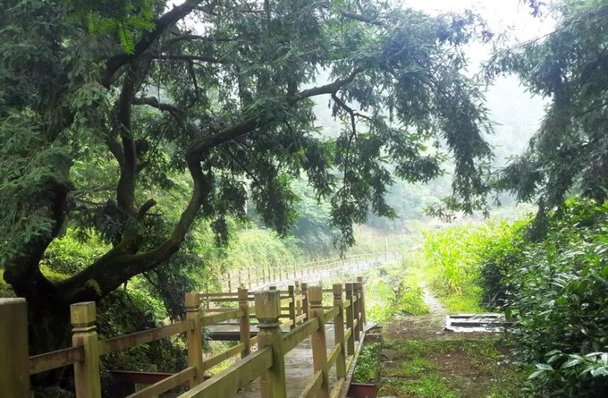
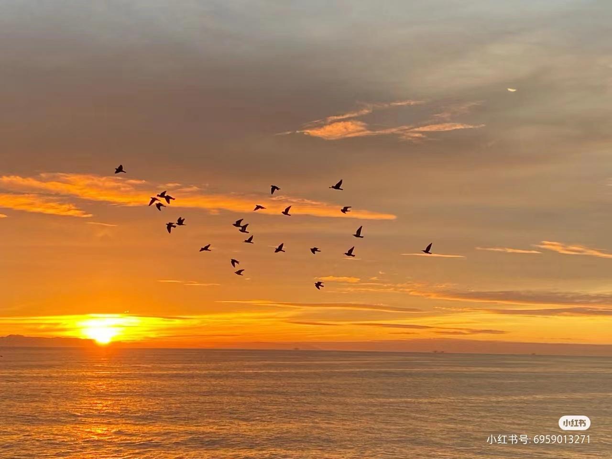

联系我们
自我介绍
诗词赏析
代表人物
影视作品
诗词展示
名胜古迹
历史渊源
诗词概况
诗词首页
诗词赏析
踏上这条浪漫的诗画艺术之旅，我们将领略万里江山的壮美，自然雅趣的秀美，品格高洁的至美，率真洒脱的俊美，匠心独运的精美，色彩缤纷的华美，还有幸福生活的丰美。在对美的发现与求索中，追寻生命的大美。
《渔家傲·秋思》
范仲淹
范仲淹的《渔家傲·秋思》以塞下秋景为背景，抒发了作者对祖国山河的热爱和思乡之情。其中“塞下秋来风景异”一句，通过“异”字，表现了边塞秋天的独特风光，同时透露出对家乡的思念。整首词意境深远，情感真挚，表现了作者的高尚情操和深厚的文学功底。
《忆江南》
白居易
白居易的《忆江南》以其优美的语言和深刻的意境，描绘了江南春天的美景。其中“江南好，风景旧曾谙”一句，表现了作者对江南春色的熟悉和喜爱，同时也传递出对美好生活的向往。整首词构思精巧，语言流畅，寓意深刻，充分展现了白居易的诗词才华和艺术魅力。

《江南逢李龟年》
杜甫
杜甫的《江南逢李龟年》以江南春景为背景，抒发了作者与故友李龟年的重逢之情。其中“正是江南好风景，落花时节又逢君”一句，通过“好风景”和“落花时节”的对比，表现了江南春天的美丽和短暂，同时也传递出对故友的重逢和感慨。整首诗情感真挚，语言优美，寓意深刻，展现了杜甫的诗词才华和人文情怀。
篁岭晒秋
丽水风光
武夷九曲
黄山云海
卢村日出